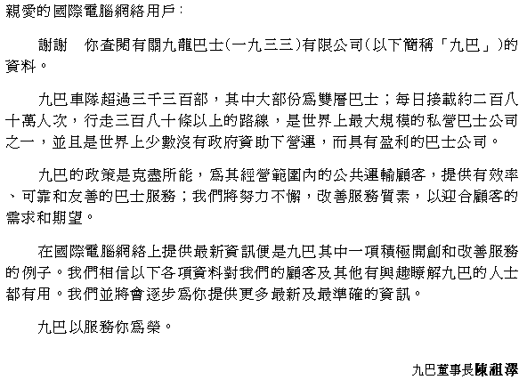

| Home | KMB News | Message | Keep HK on the Move | Airport Bus
| Enquiry Guide | KMB Song | Friends of KMB |
All Rights Reserved. KMB Copyright 1996 ©
Service by NETmarket - Hong Kong Star Internet Ltd.
Dear Internet User,
Thank you for your interest in finding out about the Kowloon Motor Bus Company (1933) Limited ("KMB").
With a fleet of over 3,300 buses, mostly double deckers, carrying about 2.8 million passenger trips daily on more than 380 routes, KMB is one of the largest privately operated bus companies in the world - and one of the few that operates profitably without any Government subsidy.
KMB's policy is to do all it can to provide an efficient, reliable and user-friendly bus service to all public transport users travelling within its operating area. The Company endeavours continuously to improve the quality of its service to meet the needs and expectations of its customers.
The provision of information through Internet is one of KMB's new initiatives to improve service quality. We trust the following pages of information will be useful to our customers and others who are interested in knowing more about us. We shall be adding to the information progressively as well as keeping them up to date.
KMB is delighted to be of service to you.
|
John C C Chan Managing Director |
